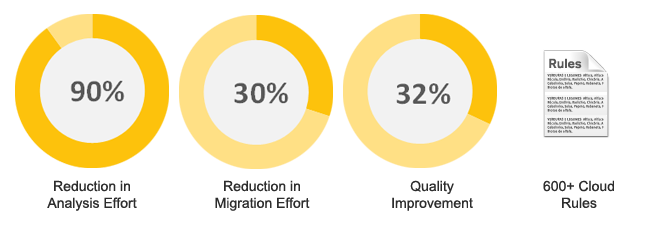

Cloud: The Foundation for Digital Transformation
Digital transformation is the key to maintaining a competitive advantage in today’s dynamic business landscape. Cloud platforms help businesses simplify their core IT systems while keeping the lights on, an essential technology enabler in any modernization effort. The success of any digital transformation hinges on how effectively an organization can leverage cloud, making it critical to choose the right cloud solution.
With more than three decades of enterprise services experience, Syntel offers cloud services designed to build a digital backbone that meets your business needs. We leverage a structured approach to cloud transformation, and our managed services model delivers guaranteed business outcomes. The three pillars of Syntel’s cloud services are:
- Agility – Delivering faster time-to-market, with reduced processing cycle time
- Availability – IT system uptime, business process execution
- Efficiency – TCO reduction for services and infrastructure
Business Benefits Delivered to Our Clients
$249 Million
TCO
Reduction
37% TCO
Reduction and Digital Backbone
$8 Million
Increase in
Total Revenue
42% Faster
Time-to-Market for Campaigns
Syntel's Technology Accelerators Deliver

Our Services
Cloud Advisory
- ROI-based Cloud Migration Roadmap
- Portfolio/Inventory Analysis
- Cloud Platform Reference Architecture Effort Estimation
Cloud Implementation as a Service
- Risk-free Cloud Migration
- Reduced effort with Automated Code Analysis and Migration
- Complete/Partial Auto Remediation
- Microservice-based Architecture
Legacy to Cloud
- Incremental Modernization for Faster Legacy Exit
- Legacy Re-architecture
- Automated Migration for Cloud
- Legacy to COTS
Rapid Platforms
- Accelerated Business Transformation across Industries
- Salesforce Silver Partner
- Social Enterprise Solutions
Enterprise Public Cloud
- Managed Services Approach for fast onboarding and risk minimization
- Silver Microsoft Azure Circle Partner
- Comprehensive enterprise public PaaS/ SaaS solutions for Microsoft Azure, Amazon Web Services, Google, IBM Bluemix, Cloud Foundry & Oracle
Cloud Operations powered by SyntBots®
- Unified automation platform for managing an enterprise’s IT infrastructure, including application and infrastructure support, monitoring and remediation
- Customizable levels of automation – from enriched or assisted to fully automated